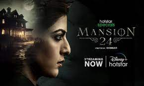

Mansion 24
Mansion 24 is an Indian Telugu-language horror thriller television series written by Mayukh Adithya and directed by Ohmkar. Produced by Ashwin Babu and Kalyan Chakravarthy under the banner of Oak Entertainment, it stars Varalaxmi Sarathkumar in lead roles.[1] It premiered 17 October 2023 on Disney+ Hotstar.[2]
season 1
episode 1
description : The first episode of the 2023 TV series Mansion 24 is about Amrutha entering an abandoned mansion to search for her missing father. She meets a watchman who tells her about a novelist whose married boyfriend killed her, and other ghostly stories. Amrutha then experiences terrifying forces and secrets as she explores the mansion.

episode 2
description : Episode 2 of season 1 of Mansion 24 is about the watchman telling the story of a drugstore girl who was killed by her married boyfriend. The story is shrouded in darkness and sorrow.
>
episode 3
description : Episode 3 of Mansion 24 is about a family that was once destroyed by superstition, but Amrutha uses logical arguments to dispel this false assumption. In this episode, Amrutha enters a deserted mansion while searching for her missing father, Kalidas. She encounters scary supernatural events and a watchman who tells her the story of a novelist who was killed by her married boyfriend.
season 2
episode 1
description : season 2 of Mansion 24 is about a classical dancer who hears a baby's cry in her apartment. The episode explores who is crying and why. The episode is titled 409.
episode 2
description : A sculptor who traded in women's bodies was found dead after a sex worker visited his apartment. Amrutha, using her intelligence, skillfully uncovers the truth behind the incident./summary>
episode 3
description : Amrutha, determined and resourceful, eventually unravels the truth about the watchman and unlocks the mystery behind her father's missing case, bringing closure to a long-standing enigma that had haunted her family for years.